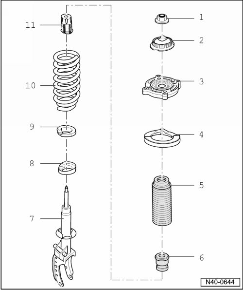

Strut Assembly Overview
Strut Assembly Overview

1 Self locking nut
• M14 x 1.5.
• 60 Nm.
• Always replace after removal.
2 Shock absorber mount
3 Upper spring seat
4 Upper support
5 Protective sleeve
6 Buffer stop
7 Shock absorber
8 Lower washer
• Allocation, refer to --> [ Lower Spacer Allocating ] Lower Spacer Allocating.
9 Lower support
10 Coil spring
• Surface of spring coil may not be damaged.
• Note color code.
11 Protective cap